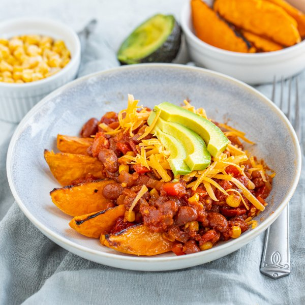

Sweet Potato Burrito Bowl with Kidney Bean Chili, Cheddar & Avocado

Total Time
40 min
Nutrition (per serving)
701.2 kcalCalories
25.7 gProtein
91.4 gCarbs
29.6 gFat
Full nutrition table
| Calories | 701.2 kcal |
| Total fat | 29.6 g |
| Saturated fat | 8.4 g |
| Trans fat | 0.4 g |
| Cholesterol | 28.9 mg |
| Sodium | 586.2 mg |
| Carbohydrates | 91.4 g |
| Fiber | 24 g |
| Sugars | 22.7 g |
| Protein | 25.7 g |
| Potassium | 1808.1 mg |
| Calcium | 422.5 mg |
| Iron | 6.9 mg |
| Vitamin A | 25463.6 IU |
| Vitamin C | 116.2 mg |
| Vitamin D | 6.8 IU |
Cookware
Ingredients
- 1avocado
- ½ (8 oz) blockcheddar cheese
- 2 (14.5 oz) cansdiced tomatoes
- 1 cupfrozen corn
- 2 clovesgarlic
- 2 (15 oz) canskidney beans
- 2red bell peppers
- 1 ½ lbsweet potatoes
- 1 mediumyellow onion
- cayenne pepper
- chili powder
- cumin, ground
- extra virgin olive oil
- paprika
- salt
Steps
- Preheat oven to 450°F. Line a large baking sheet pan with aluminum foil and set aside.
- Wash and dry the fresh produce.1 ½ lb sweet potatoes
2 red bell peppers
1 avocado - Peel and cut sweet potatoes lengthwise into 1-inch thick wedges (4-6 pieces per potato, depending on size), then transfer to the baking sheet. Drizzle with oil and season with spices; toss to coat and spread out in an even layer.4 tsp extra virgin olive oil
2 tsp chili powder
1 tsp cumin, ground
1 tsp salt - Place sweet potato wedges in the oven (it doesn't have to be fully heated) and bake, flipping halfway through, until fork-tender, about 25 minutes. Remove from oven.
- Meanwhile, drain and rinse beans; set aside to drain further.2 (15 oz) cans kidney beans
- Preheat a large skillet over medium-high heat.
- While the skillet heats up, peel, halve, and small dice onion; peel and mince garlic.1 medium yellow onion
2 cloves garlic - Once the skillet is hot, add oil and swirl to coat the bottom. Add onion, garlic, and corn; cook, stirring occasionally, until softened, 3-4 minutes.4 tsp extra virgin olive oil
1 cup frozen corn - While the veggies are cooking, trim, seed, and small dice bell peppers.
- Add beans, bell pepper, tomatoes, and spices to the skillet; stir to combine the chili and bring to a simmer.2 (14.5 oz) cans diced tomatoes
4 tsp chili powder
2 tsp cumin, ground
1 tsp paprika
1 tsp salt
¼ tsp cayenne pepper - Once the chili is simmering, reduce heat to medium and cook, stirring occasionally, until veggies are tender and sauce has thickened, 5-6 minutes. Remove from heat.
- Meanwhile, coarsely grate cheese.½ (8 oz) block cheddar cheese
- Halve and pit avocado. Slice thinly while still in skin, then scoop out with a spoon.
- To serve, divide sweet potato wedges between plates or bowls; top with chili, cheese, and avocado. Enjoy!